Bioinformatics · University of Pretoria · FABI
I decode the chemistry fungi use to attack Africa's staple crops — and help a generation meet AI with judgment, not hype.
01 / What I work on
Predicting the secondary metabolites and biosynthetic gene clusters that let Exserohilum fungi cause leaf blight in maize and sorghum — turning fungal genomes into leads for better disease management.
Co-founder of an AI Literacy Society and Perplexity's campus lead for South Africa — teaching students to use AI critically, and co-authoring responsible-AI policy briefs presented at the Istanbul Youth Conference.
Co-founder of Refugee Refuge, empowering young refugee women, plus years of mentorship, academic-appeals support, and outreach for students the system tends to count out.
02 / Who I am
"AI is most useful when it grows out of local realities — and when young people help shape it."
I'm a bioinformatics researcher at the University of Pretoria, based at the Forestry & Agricultural Biotechnology Institute (FABI) in the Cereal Foliar Pathogen Research Group. My work sits where genomics, chemistry and food security meet: the fungal diseases that quietly erode maize and sorghum harvests across sub-Saharan Africa.
As a first-generation graduate born to a refugee family in South Africa, I've never treated education as something to keep for myself. I co-founded an AI Literacy Society and the Refugee Refuge NGO, led Perplexity's campus programme nationally, and was selected for the Talloires Network's inaugural For Youth, By Youth cohort on responsible AI. Whether I'm running a mass spectrometer or a mentorship circle, the goal is the same: widen the door.
03 / The science
My MSc predicts and characterises the secondary metabolites that plant-pathogenic Exserohilum species use to infect cereal crops — the molecular groundwork for smarter, more targeted disease control.
Exserohilum turcicum is the fungus behind northern leaf blight, and its relative E. rostratum drives leaf-spot disease — together capable of destroying a large share of a maize crop. Yet the small molecules these fungi deploy to invade, colonise and sicken their hosts remain poorly mapped.
Working from their genomes, I use bioinformatics to predict the secondary metabolites and the biosynthetic gene clusters that encode them, then characterise the roles they play in pathogenicity. The aim is to explain how these fungi succeed at the chemical level, and to hand crop scientists new footholds for managing the disease.
Group · Cereal Foliar Pathogen Research, FABI — Dept. of Biochemistry, Genetics & Microbiology
Supervisors · Dr David Nsibo (primary) · Dr Rian Pierneef · Dr Nicky Olivier
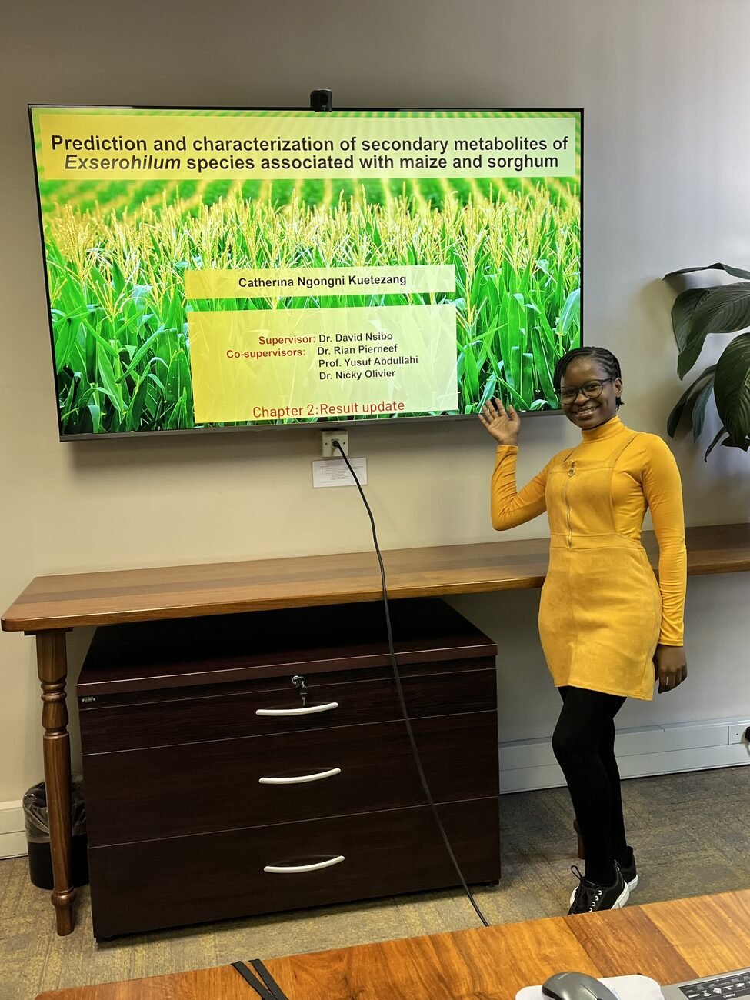
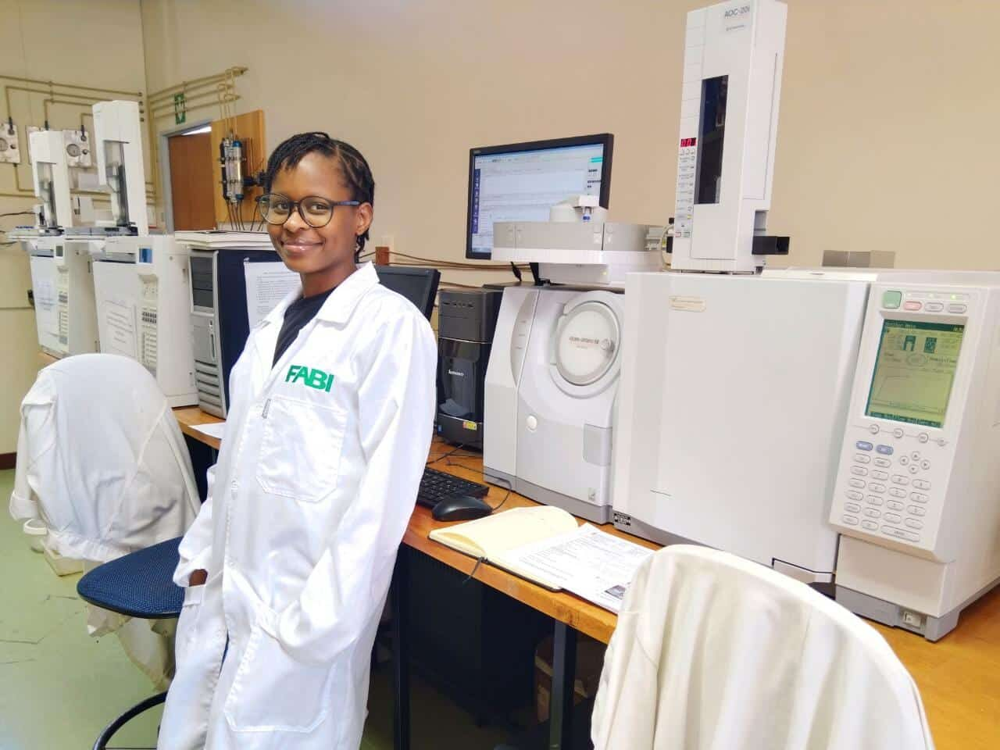
GC–MS and wet-lab analysis at FABI, pairing computational prediction with real chemical evidence.
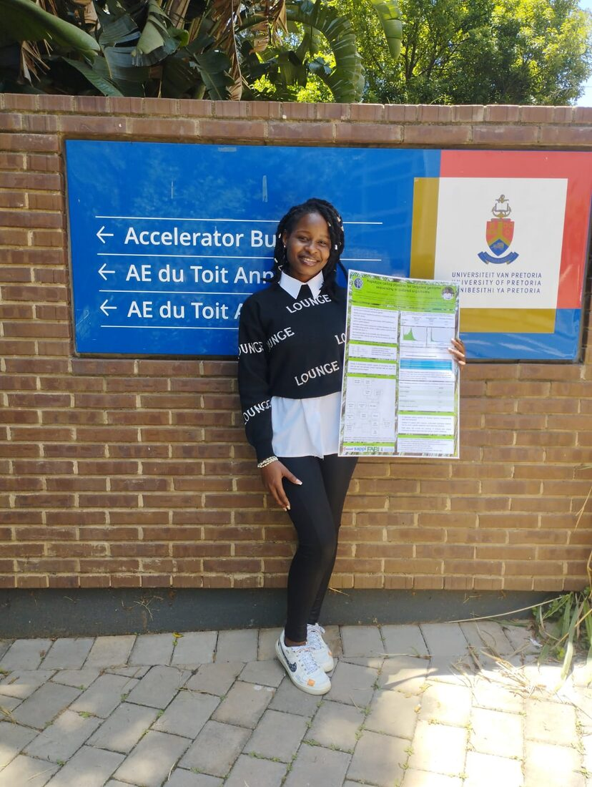
Presenting a haplotype-calling pipeline and poster within the Faculty of Natural & Agricultural Sciences.
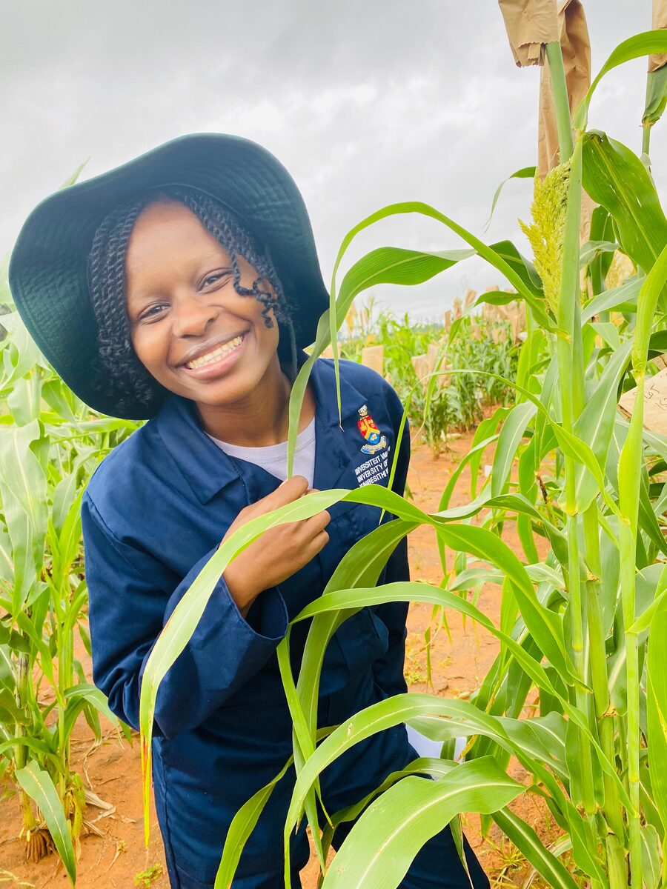
Sampling in maize and sorghum trial plots — keeping the biology connected to the data.
04 / Experience & education
Feb 2025 — present
University of Pretoria · Research Library
Supporting Master's and PhD students with AI research tools, document formatting and statistical software.
Jan — Jun 2025
Perplexity AI (Remote)
Led campus strategists across SA universities and trained 700+ students on the ethical use of Perplexity AI in research and academia.
May 2024 — May 2025
University of Pretoria
Invigilated for 350+ undergraduates and tutored & marked assessments for 700+ second-year students.
Mar — Aug 2024
University of Pretoria
Led an executive committee and ran an academic-exclusion support event that helped reinstate 25+ students.
2024 — present
University of Pretoria · FABI
In-silico analysis of fungal pathogens driving maize & sorghum disease.
2024 — 2025
ALX South Africa
SQL, Python, data visualisation, regression, NLP & classification, unsupervised learning, AWS foundations.
2023
University of Pretoria
Statistics · Bioinformatics · Molecular & Cell Biology.
2020 — 2022
University of Pretoria
Biostatistics · Genetics · Biochemistry · Physiology · Analytical Chemistry.
05 / Beyond the lab
The work that never shows up in a genome browser — but shapes who gets to do the science in the first place.
Co-founder
Founded to counter misconceptions about AI on campus and equip students and staff with ethical, practical AI skills.
Co-founder
A nonprofit empowering marginalised young refugee women and serving refugee children and underserved communities.
Willmore Youth Foundation · 2023 — present
Guiding and proofreading appeal letters that help students earn reinstatement to their studies.
STARS Mentorship · Nerina Res · 100KidsToVarsity · Messengers Project
Mentoring first-years, tutoring learners in high schools, and running lunch drives for people experiencing homelessness.
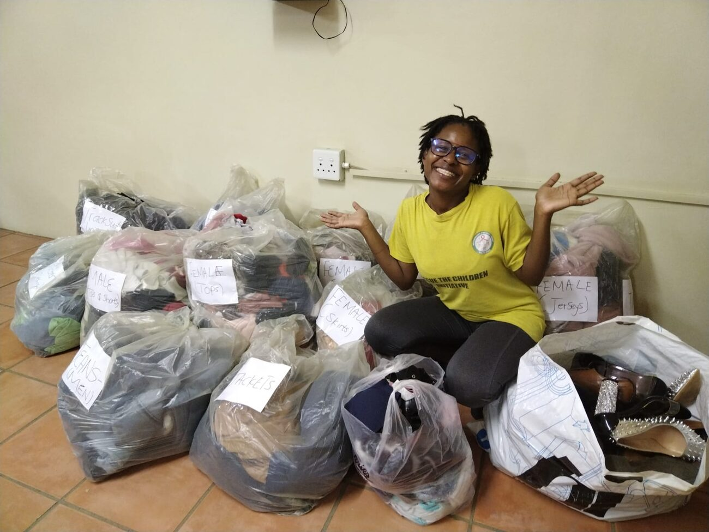
06 / Recognition
2026
Talloires Network working group on youth-led responsible AI; policy briefs presented at the Istanbul Youth Conference.
2025
Recognised for leading change through education and justice as a first-generation graduate and advocate.
2023
Top 15% of the Faculty of Natural & Agricultural Sciences (75% average).
2023
Awarded for placing in the top academic tier of the faculty.
2024
Completed and actively participated — University of Pretoria.
2022
Attainment Institute — for guiding matriculants on careers and university opportunities.
07 / Toolkit
Programming
Bioinformatics & data
Research & communication
Languages
08 / In frame
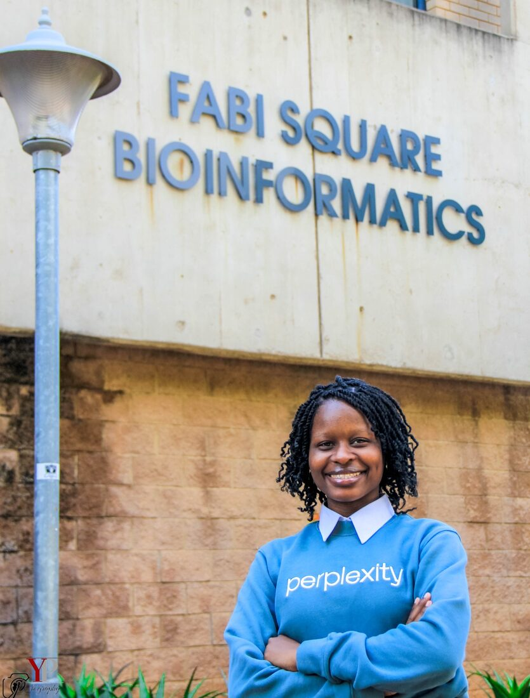
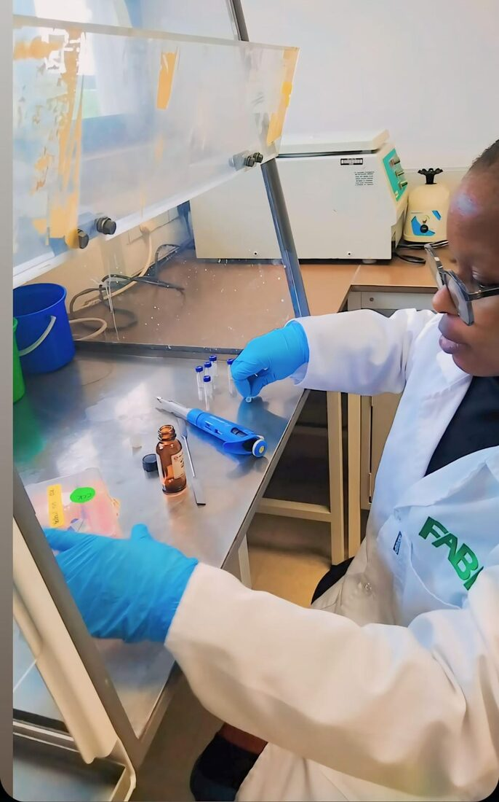
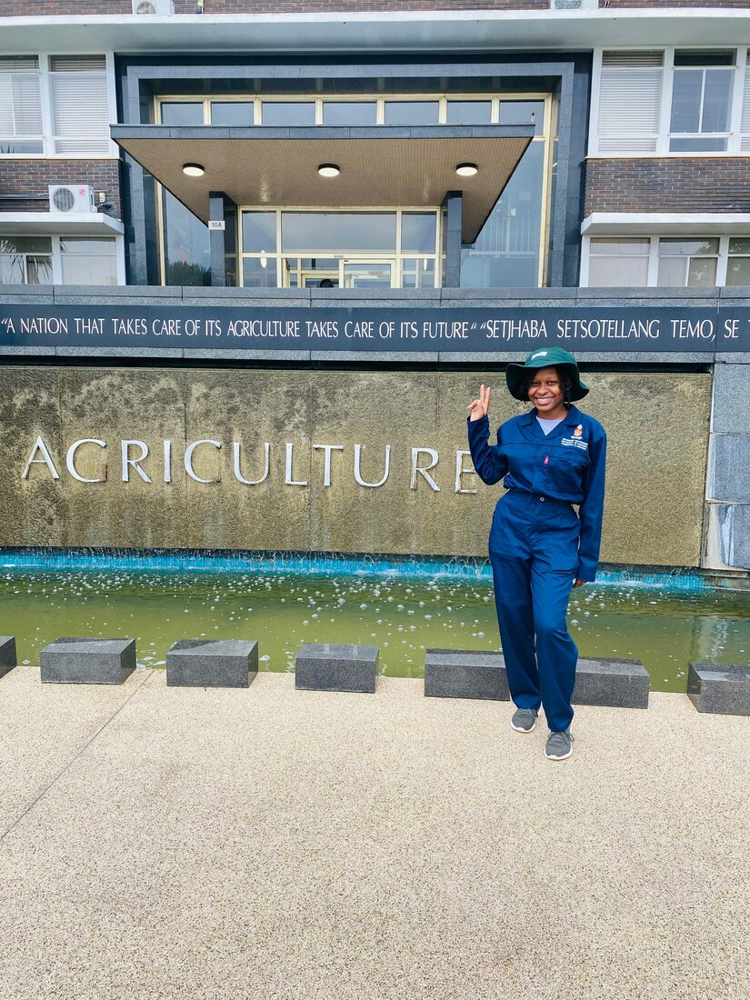
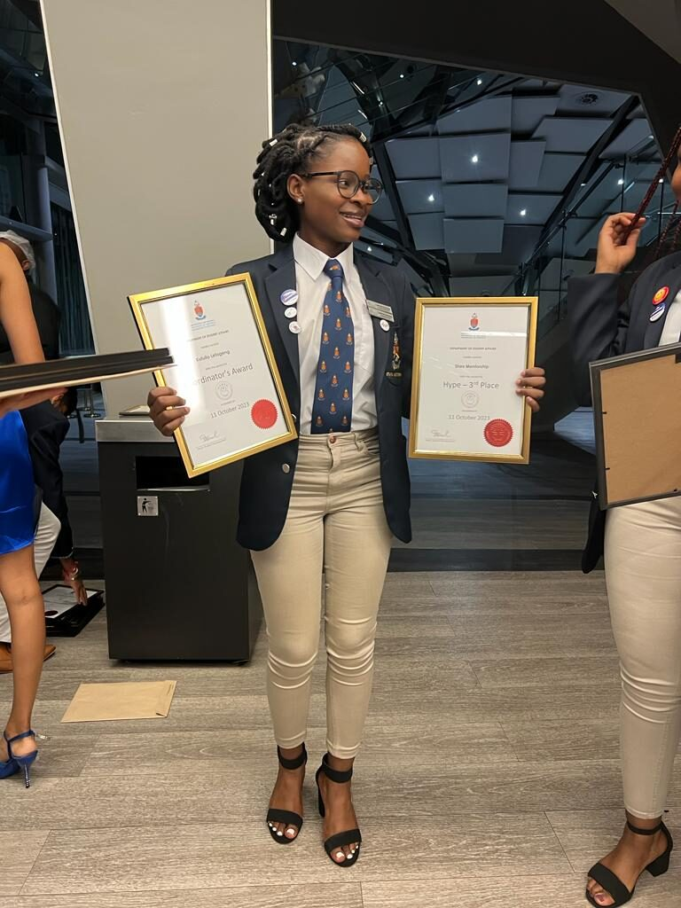
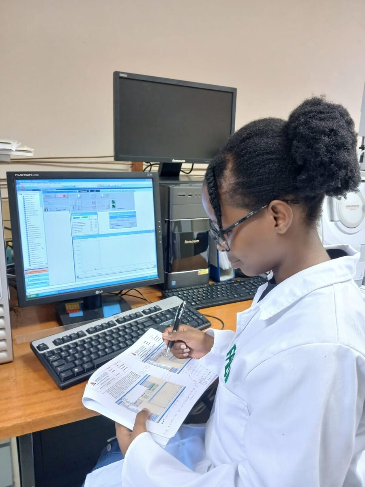
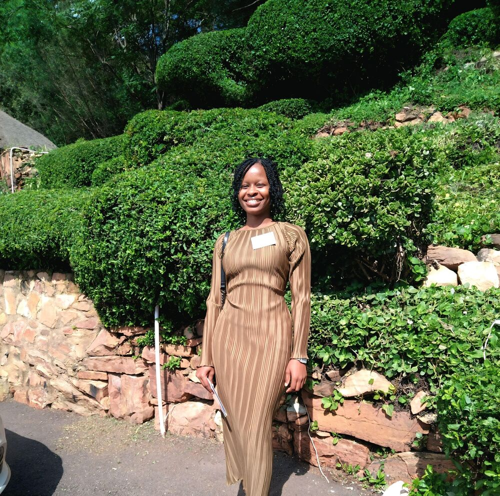
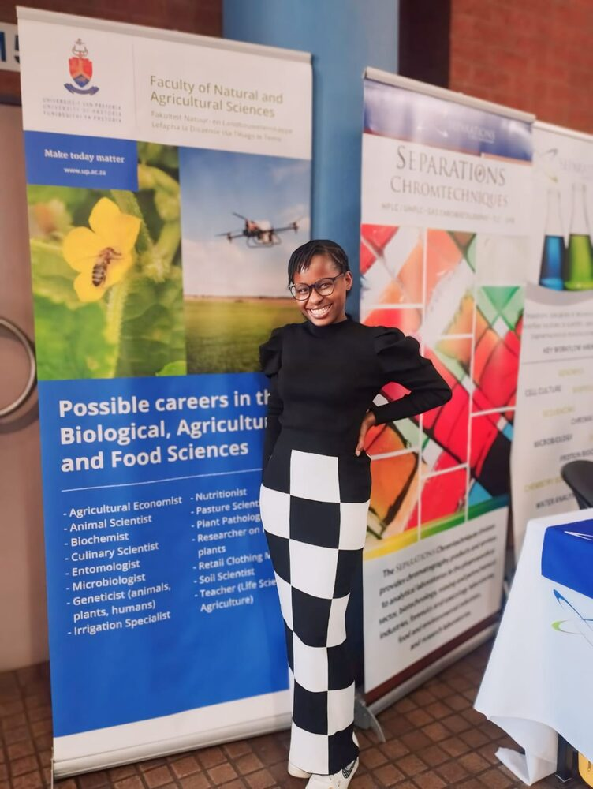
09 / Let's talk
I'm open to research collaborations, PhD and funding conversations, speaking on AI literacy, and community work. Reach out — I answer.